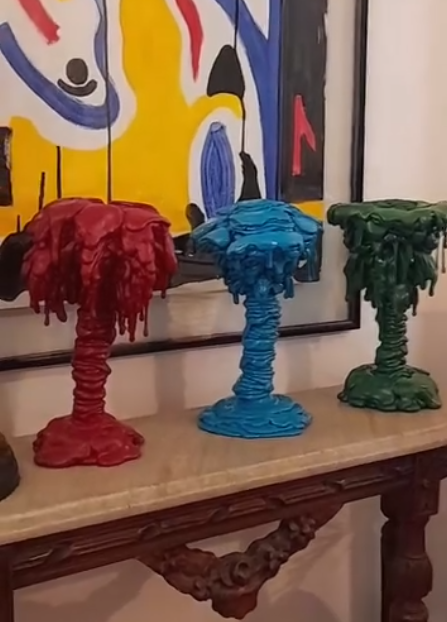

Pesquisa visual
Investigação sobre corpo, matéria, poder, subjetividade e vida social.
Arte contemporânea · obras disponíveis · contato direto
A Contemporarte apresenta obras, séries, registros de exposição e o percurso artístico de Pablo Menezes em uma experiência de visita pensada para aproximar obra, artista e colecionador.
Conceito
Esta versão local reúne obras e registros extraídos do material já disponível: cerâmicas, objetos, fotoarte, desenhos, pinturas, obras para jardim e registros da exposição Genoma. As fichas técnicas podem ser refinadas depois com dimensões, datas e disponibilidade.
Acervo
Clique em uma obra para ampliar. Use os filtros para navegar por série, tipo de obra e período.
Exposições
Área reservada para os registros corretos da exposição Genoma no Centro Cultural dos Correios e da fachada da rua Ipiranga 31, em Laranjeiras.
Artista
A obra de Pablo Menezes investiga como o poder atravessa a subjetividade, infiltrando-se nos gestos cotidianos, nas relações sociais e nas estruturas aparentemente neutras da vida comum. Sua produção transita entre pintura, objeto, escultura, desenho, fotoarte, matéria orgânica, resina, cerâmica e intervenções ligadas ao espaço expositivo e urbano.
Ainda jovem, destacou-se no circuito cultural de Sergipe com painéis públicos, performances e exposições-instalação, entre elas "O Plágio... O Novo...", "Vastas Entranhas" e obras de grande escala como "Agreste Alegre" e "Veredas Juninas". No Rio, pesquisou pintura no Centro de Artes Calouste Gulbenkian e na Escola de Artes Visuais do Parque Lage.
Expôs no Instituto Cultural Brasil Argentina, Galeria Villa Riso, Galeria Arte Universo, Galeria Marly Faro, XV Salão de Arte da Universidade Estácio de Sá, Galeria Contemporarte em Búzios, MAM-RJ e Carrousel du Louvre. Em 2005 realizou em Londres a individual "Brazilian Extravaganza", na Pangea Gallery. Suas obras integram coleções no Brasil e no exterior, incluindo comodato no acervo do MAM-RJ.

Percurso
Espaço reservado para organizar a trajetória de Pablo Menezes: processo, pesquisa, exposições, projetos e presença no campo da arte contemporânea.
Investigação sobre corpo, matéria, poder, subjetividade e vida social.
Área para projetos, exposições, instalações e registros institucionais.
Registros da exposição Genoma, obras de parede, objetos, desenhos e séries em organização.
Futuro tour virtual
Um corredor de galeria: obras à direita e à esquerda, com luz suave destacando as peças. Depois, esta área pode evoluir para tour 2D, 360° ou Three.js.
Contato
A venda acontece por contato direto: disponibilidade, ficha técnica, envio e condições são combinados com a galeria.